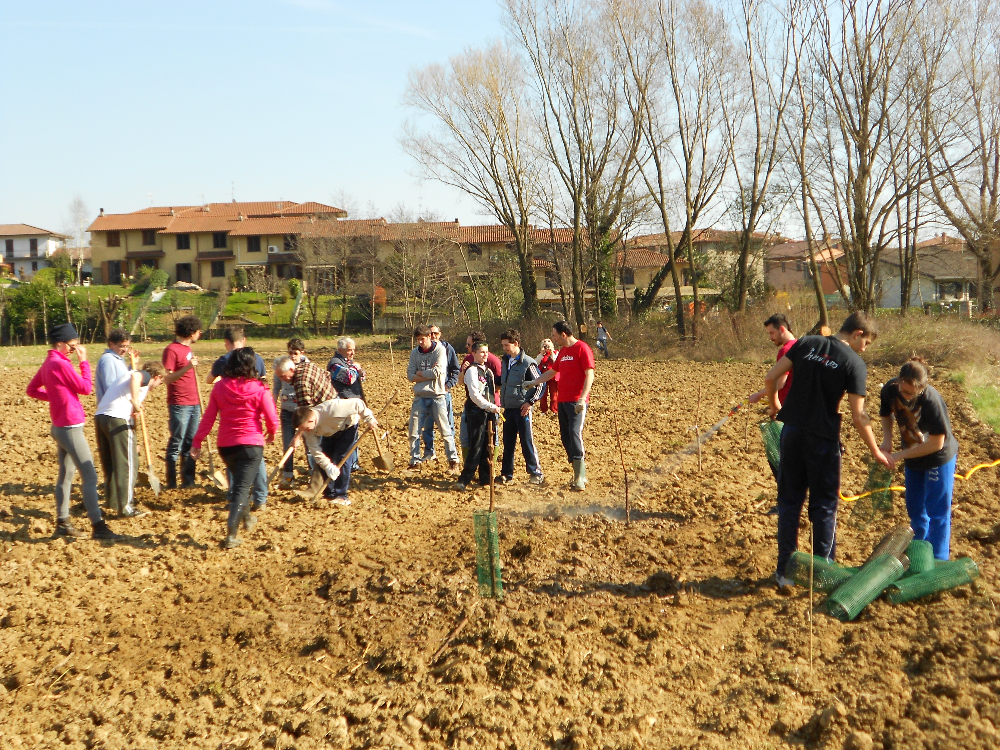
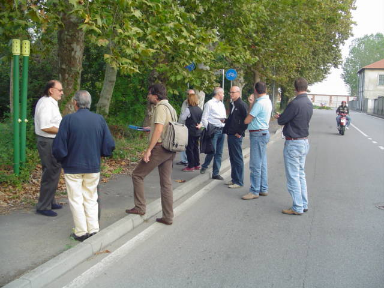

Toggle navigation
DFstudio
Davide Fortini
Chi sono
News
Foto e Video
Contatti
Foto e Video
Cantieri Sociali

Cantieri Sociali
Eventi Promozione Sostenibilità
Eventi Promozione Sostenibilità
Focus Group
Forum Multiattori
Incontri Pubblici
Osservazioni Partecipate

Osservazioni Partecipate
Rete Attori per la Ciclabilità
Rete Attori per la Mobilità a Zero Emissioni
Stanze di progetto
Stanze di progetto
Tavoli Deliberativi
Arte di Interesse Pubblico
PGT partecipativo e Azioni partecipate
PGT partecipativo e Azioni partecipate
PGT partecipativo e Azioni partecipate
PGT partecipativo e Azioni partecipate
PGT partecipativo e Azioni partecipate
PGT partecipativo e Azioni partecipate